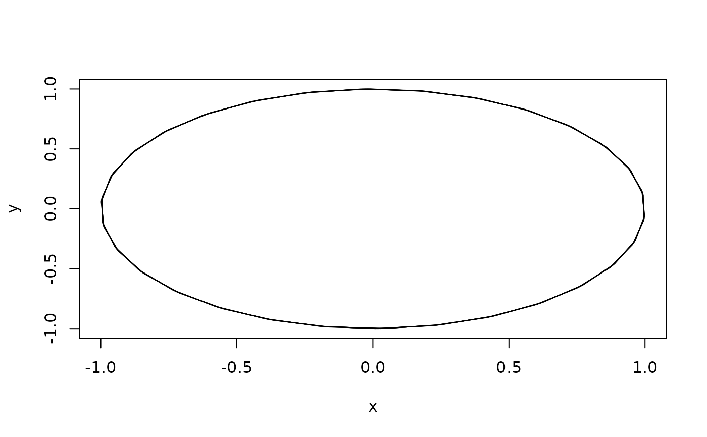
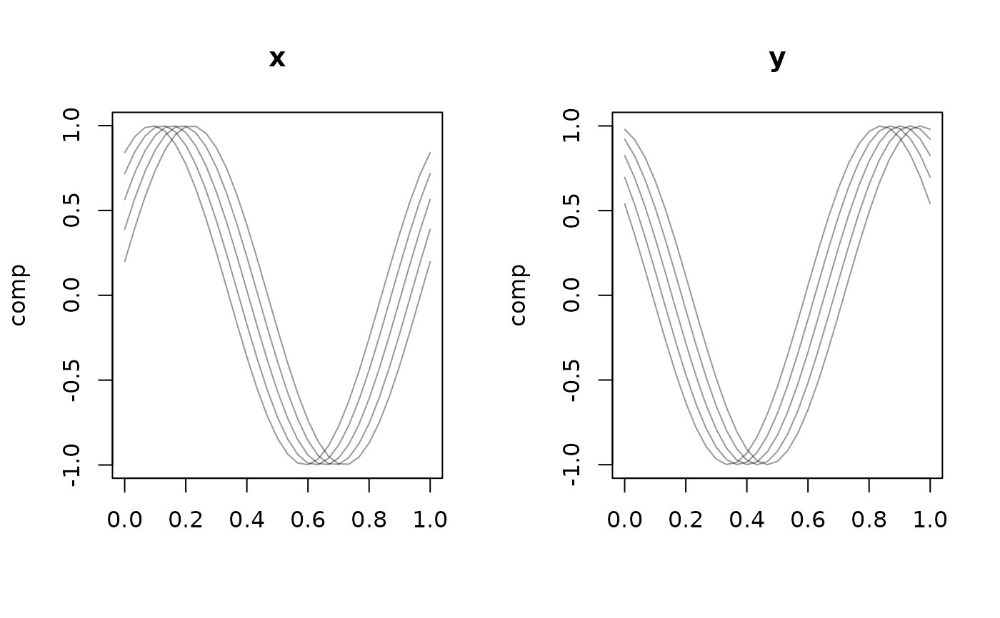

Two simple display modes for tf_mv objects: "facet" draws one panel per
output dimension (delegating to the univariate plot.tf());
"trajectory" (only for d == 2) draws the curves in the plane, i.e.
\(y(t)\) against \(x(t)\) – the natural view for movement data.
Details
In "trajectory" mode the two components must be paired at common argument
values to form \((x(t), y(t))\) points. When the components are sampled on
different (or per-curve irregular) grids they are therefore evaluated on the
union of their argument grids with interpolate = TRUE (values outside a
component's observed range become NA and are skipped). For components that
already share a grid this is a no-op.
See also
Other tf_mv-class:
tf_arclength(),
tf_geom,
tf_mv_methods,
tfb_mfpc(),
tfb_mv(),
tfd_mv()
Examples
arg <- seq(0, 1, length.out = 31)
xf <- tfd(t(sapply(1:5, function(i) sin(2 * pi * arg + i / 5))), arg = arg)
yf <- tfd(t(sapply(1:5, function(i) cos(2 * pi * arg + i / 5))), arg = arg)
mv <- tfd_mv(list(x = xf, y = yf))
plot(mv, type = "trajectory")

plot(mv, type = "facet")
